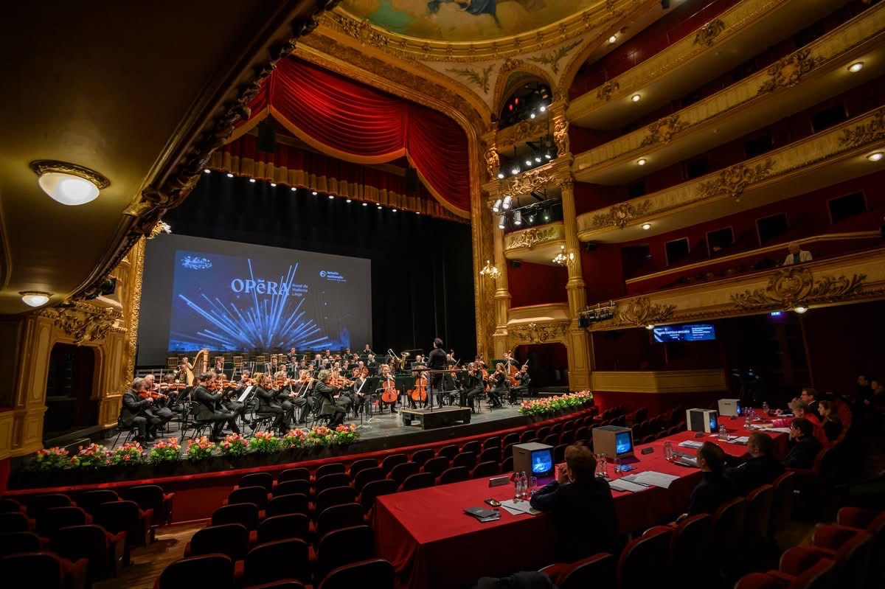
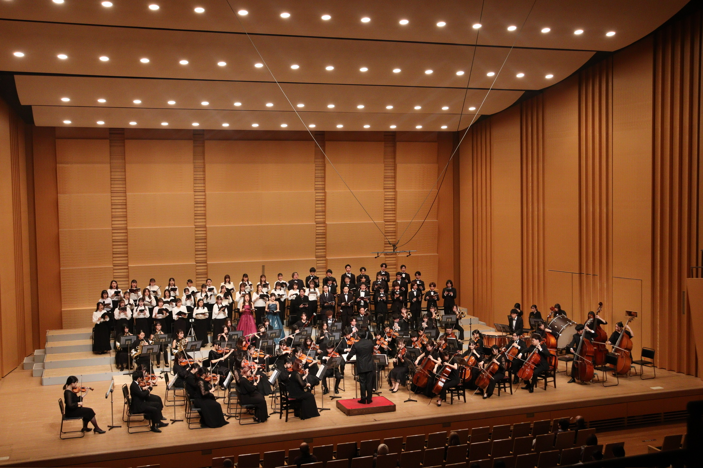
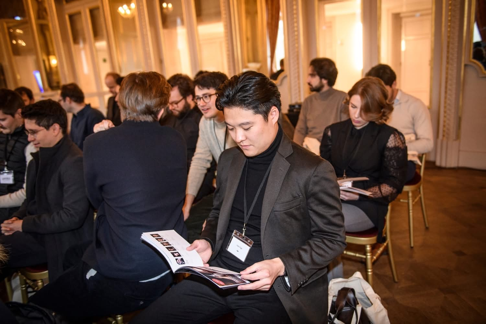

Conductor, Violinist
Eigo Sato
Profile

Education
- Tokyo College of Music | Conducting Trainee Program (2020-2023)
- Tokyo University of Foreign Studies | B.A. in International and Area Studies, Japan Studies (2019-2023)
Conducting Experience
Representative Director & Music Director of VariOrchestra. Selected Conducting Fellow at the Riccardo Muti Italian Opera Academy in Tokyo, Vol.5 (Verdi's Simon Boccanegra) and at the Biwako Hall Opera Seminar 2025 (Mozart's Le nozze di Figaro under Maestro Tetsuro Ban). Selected as one of the 24 final round participants at the 3rd International Opera Conducting Competition (Belgium, 2025). Orchestras conducted include the Osaka Symphony Orchestra, Tokyo Spring Festival Orchestra, and others.
Awards
- 1st Prize | Bach International Music Competition UK 2024
- 1st Prize | Gabriel Faure Music World Competition
- Platinum Prize | Max Bruch International Competition 2024
Professional Leadership
Founded and leads VariOrchestra, a professional chamber orchestra based in Tokyo. The 2026-27 season presents complete symphony cycles of Beethoven and Brahms. Also works as a strategy consultant specializing in corporate strategy and organizational reform at a leading consulting firm.
Teachers
Conducting: Nobutaka Masui (Professor at Tokyo College of Music). Violin: Yuri Shirase, Ryotaro Ito (Former Concertmaster, NHK Symphony Orchestra).
Photos


